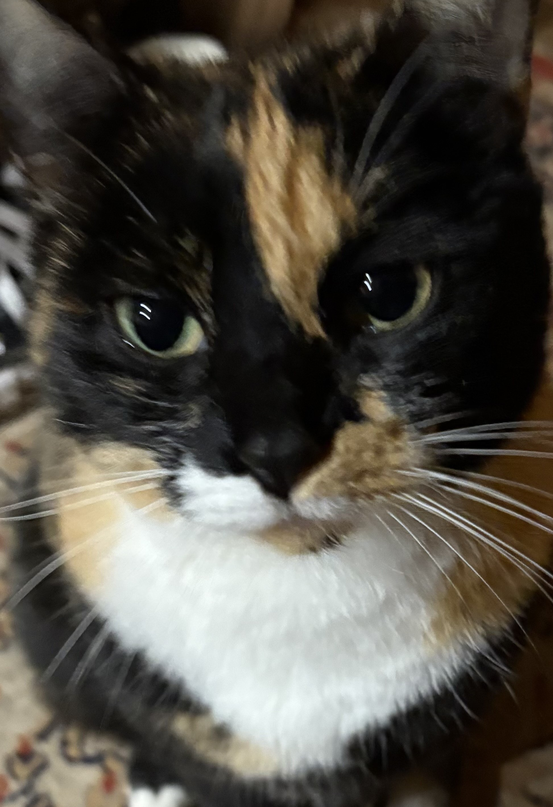
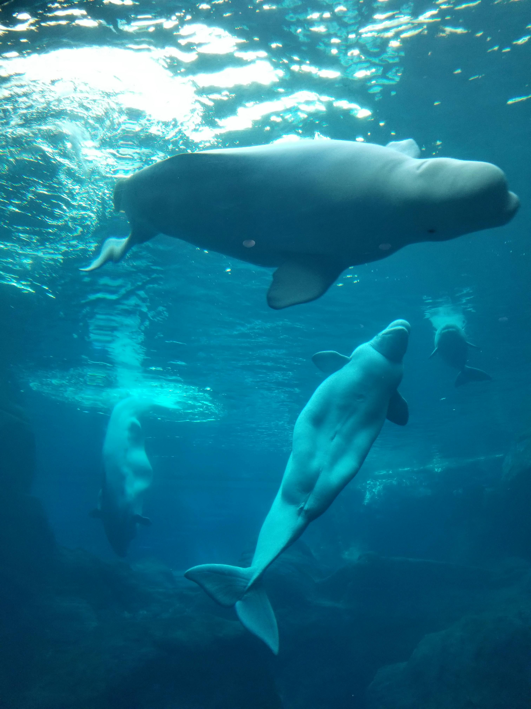

Les races les plus mignonnes sont :
Mais aucun chat n'est plus mignon que le mien !
Il y a beaucoup à savoir sur les chats.
Heureusement, il existe des sites comme Wikipedia ou des livres.
Le capybara, appelé également le capibara ou le cabiai, est un petit mammifère herbivore rongeur de la famille des cavidés.
Il est le plus gros rongeur au monde.Les bélugas (Delphinapterus leucas) sont des mammifères extrêmement sociables qui vivent, chassent et migrent en groupes allant de quelques baleines à des centaines d’individus. Ceux-ci vivent principalement dans les zones glacées de l’Arctique, et les deux tiers de la population mondiale (environ 180 000 individus) passent l’été dans les eaux canadiennes.
Comparativement aux autres espèces de baleines, les bélugas ont de longs cous distinctifs et des vertèbres cervicales non soudées, ce qui contribue à leur flexibilité et aux mouvements de nage variés. Leur front bulbeux, appelé melon, peut changer de forme, leur permettant d’effectuer différentes expressions faciales, d’émettre des signaux sonores, des sifflements, des cris et des claquements audibles, ce qui leur a valu le surnom de « canari des mers ». Ces sons leur permettent de communiquer entre eux et les aident à naviguer et à trouver leur nourriture avec l’écholocalisation.
Le mot béluga vient du russe « bielo », qui veut dire blanc. Les nouveau-nés sont gris foncé, mais ils deviennent blancs dans leurs huit premières années de vie.
Son poids adulte peut aller jusqu'à 1900kg et sa taille jusqu'à 4,5m !
Des milliers d’années d’évolution ont permi à des espèces arctiques comme le béluga de s’adapter à la vie sur et autour de la banquise. En raison des dérèglements climatiques, cette couverture de glace change rapidement, autant en étendue qu’en épaisseur, et elle rétrécit beaucoup trop rapidement pour que ces espèces puissent s’adapter. Les bélugas dépendent de la banquise pour se protéger des épaulards prédateurs. Les épaulards constituent une menace croissante, à mesure que l’Arctique se réchauffe et que la banquise se retire.
